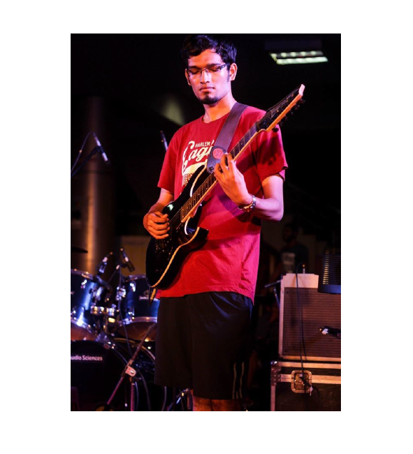

Extracurriculars
Apart from research, two other activities have played a major role in my life - Music and Basketball. I do pick up new activities from time to time, but they generally do not last very long. For example, I actively played chess and represented my school at various tournaments in 7th grade, and there was a period in my tenth grade where I read a novel every week, for a couple of months.
Music

I was fortunate enough to learn music from an early age. I first picked up the guitar at age ten. I underwent formal training for a very short time (about a month and a half), and have been learning on my own since then. Over the years, I've learnt to play the bass guitar, the piano, the drums and the harmonica, all to varying degrees of success. My go-to instrument, however, has been the electric guitar (I own a couple). My play style is largely based on Eric Clapton and Mark Knopfler and my favorite genres are blues and jazz. Currently I'm working on learning alternate scales and improvising on jazz progressions.
Basketball
In junior school, I tried a number of sports, including football, volleyball, table tennis and cricket, but I eventually settled for basketball. I attended a couple of summer training camps during 2006 - 2008, and made it to my school team in 2008, when I was in eighth grade. I continued to be a part of my school team till tenth grade, and we won a couple of tournaments. I took a break from basketball for a couple of years due to studies, and resumed playing in my second year at IIT Madras. I made it to the institute basketball team that year, and played at 'Sportsfest'. I also captained my hostel's basketball team from August 2015 till May 2016
I actively follow the NBA, and I currently support the Cleveland Cavaliers. With the addition of Kevin Durant to the Golden State Warriors however, I think that they are the favorites to win this year. My all time favorite players are Michael Jordan, Kobe Bryant and Larry Bird.